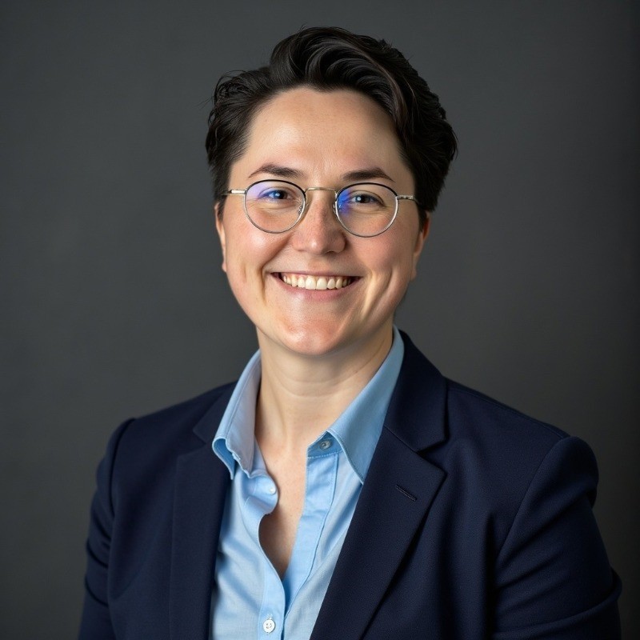

Dr. Estera Kot
Chief Technology Officer, Clouds on Mars Lecturer, Kozminski University, Warsaw Formerly Principal Product Manager, Microsoft (Azure Synapse Analytics, Microsoft Fabric)
ORCID 0000-0001-8308-7129 Google Scholar Bio (PDF) Office hours
Name also written as Ester Kot or Esther Kot.
About
Dr. Estera Kot is a computer scientist working at the intersection of machine learning, large-scale data systems, and the organizations that depend on them. Her doctoral research applied deep learning to brain biomedical image segmentation for glioma volume estimation. Her industry work took that interest in scale to its logical end: the Apache Spark runtime that powers analytics, machine learning, and Copilot workloads across Azure Synapse Analytics and Microsoft Fabric.
She earned her Ph.D. in Computer Science with distinction from the Warsaw University of Technology. She holds a U.S. patent in big data processing and has published fifteen peer-reviewed papers, twelve as first author, presented at venues including Glasgow and Redmond.
Her position on AI is uncompromising. The engineer who builds a system cannot outsource moral responsibility to regulators or ethicists. Ethics are not a compliance layer added after the architecture is fixed. They live in every optimization target, every default, every choice about what the machine rewards and what it ignores.
Research
Interests
- Deep learning for biomedical image analysis, in particular brain tumor segmentation and volume estimation
- Vectorized execution engines for Apache Spark and lakehouse architectures
- Large-scale data platform migration and engine lifecycle management
- AI governance as an engineering discipline rather than a compliance layer
Selected work
- Ph.D. dissertation: brain biomedical image segmentation for glioma volume estimation, Warsaw University of Technology, with distinction
- U.S. patent in big data processing
- Native Execution Engine for Microsoft Fabric: a vectorized Spark runtime built with Intel, Meta, and IBM, four times faster than open-source Spark
- Fifteen peer-reviewed publications. Full list on Google Scholar and ORCID
Publications
From Google Scholar. Author names as published. Works published in Polish are listed with an English title and the original in brackets.
Journal articles
- E. Kot, T. Les, Z. Krawczyk-Borysiak, A. Vykhodtsev, K. Siwek. Semantic segmentation of the prostate based on onefold and joint multimodal medical images using YOLOv4 and U-Net, Applied Sciences, 14(21), 9814, MDPI, 2024. doi:10.3390/app14219814
- E. Kot, Z. Krawczyk, K. Siwek, L. Królicki, P. Czwarnowski. Deep learning-based framework for tumour detection and semantic segmentation, Bulletin of the Polish Academy of Sciences: Technical Sciences, e136750, 2021. doi:10.24425/bpasts.2021.136750
- E. Kot, K. Siwek, E. Wińska. Architecture of a cloud platform using machine learning methods for biomedical image processing [Architektura platformy korzystającej z metod uczenia maszynowego do przetwarzania obrazów biomedycznych w chmurze] (in Polish), Poznan University of Technology Academic Journals: Electrical Engineering, 104, 35-44, 2020.
- E. Kot, K. Siwek. A CT and PET image segmentation algorithm for identifying and measuring the volume of brain glioma [Algorytm segmentacji obrazów CT i PET do identyfikacji i wyznaczania objętości glejaka mózgu] (in Polish), Poznan University of Technology Academic Journals: Electrical Engineering, 2019.
Conference papers
- E. Kot, Z. Krawczyk, K. Siwek, K. Pleska, J. Rogalski, P. Czwarnowski. U-Net training models for efficient brain tumour segmentation on multi-modality CT and PET images, 22nd International Conference on Computational Problems of Electrical Engineering (CPEE), IEEE, 1-4, 2021. doi:10.1109/cpee54040.2021.9585272
- Z. Krawczyk, R. Szmurło, P. Zawadzki, E. Kot, J. Starzyński, A. Zawadzka. Volumetric Modulated Arc Therapy dose distribution prediction for breast cancer patients: CNN approach, International Joint Conference on Neural Networks (IJCNN), IEEE, 1-10, 2021. doi:10.1109/ijcnn52387.2021.9533826
- E. Wińska, E. Kot, W. Dąbrowski. Reducing the uncertainty of agile software development using a random forest classification algorithm, Lean and Agile Software Development (LASD 2021), Springer, 145-155, 2021. doi:10.1007/978-3-030-67084-9_9
- E. Kot, Z. Krawczyk, K. Siwek, P. S. Czwarnowski. U-Net and active contour methods for brain tumour segmentation and visualization, International Joint Conference on Neural Networks (IJCNN), IEEE, 1-7, 2020. doi:10.1109/ijcnn48605.2020.9207572
- E. Kot, K. Siwek. Segmentation of brain biomedical images to compute the volume of gliomas, ITM Web of Conferences, 28, EDP Sciences, 2019. doi:10.1051/itmconf/20192801016
- E. Kot, K. Siwek. Verification of brain medical imaging results using a PET-CT phantom test [Weryfikacja wyników obrazowania medycznego mózgu za pomocą testu na fantomie PET-CT] (in Polish), XLII International Conference on Fundamentals of Electrotechnics and Circuit Theory (IC-SPETO 2019), Silesian University of Technology, 2019.
Doctoral dissertation
- E. Kot. Multimodal medical image processing methods for computer-aided diagnosis support system of brain tumors, Ph.D. dissertation, Warsaw University of Technology, Institute of the Theory of Electrical Engineering, Measurement and Information Systems, 2024.
Other manuscripts
- E. Kot, Z. Krawczyk, K. Siwek. Brain tumour detection and segmentation using deep learning methods, 2020.
- E. Kot, Z. Krawczyk, K. Siwek. Improved Morphological Geodesic Active Contours algorithm for automated, voxel-wise segmentation of biomedical images, 2020.
Teaching
Dr. Kot teaches Python programming at Kozminski University in Warsaw and has lectured as a guest at UCLA and Łazarski University. At the Warsaw University of Technology she designed original graduate and postgraduate curricula in AI-in-Cloud technologies. She is the author and academic supervisor of the postgraduate program Applications of Cloud Technologies in Data- and AI-Based Solutions (Zastosowania technologii chmurowych w rozwiązaniach opartych na danych i sztucznej inteligencji) at the Faculty of Electrical Engineering, running since 2022 and now in its 2026/2027 edition, two semesters covering cloud data engineering, modern data warehouses and governance, Microsoft Fabric, AI in BI, AWS and GCP, and cloud project management. Her former students now work at CERN, Google, Meta, and other research institutions.
She creates and hosts Fabric Espresso, a technical video series on Microsoft Fabric with 89 episodes, and speaks regularly at FabCon Europe.
Service
- Chair, later member, Faculty Doctoral Council, Faculty of Electrical Engineering, Warsaw University of Technology
- Recognized by the Rector of the Warsaw University of Technology for leadership in the Doctoral Council
Industry
As Chief Technology Officer at Clouds on Mars, a Microsoft and Databricks partner delivering data and AI across Europe and the Middle East, Dr. Kot owns technical strategy, engineering delivery, and the architecture behind the firm's most strategic accounts in healthcare, insurance, and enterprise data platforms.
At Microsoft she was Principal Product Manager for the Apache Spark runtime across Azure Synapse Analytics and Microsoft Fabric. She migrated 25,000 Synapse customers to Fabric, automated the program that moves 30,000 customers between engine versions every six months, and led cross-functional teams of nearly 300 engineers, designers, and stakeholders. Her earlier roles include Intel, Sony, Citi, and Procter and Gamble, where she introduced Apache Spark and Delta Lake in 2018.
Microsoft Fabric
Microsoft Fabric is the thread that runs through Dr. Kot's industry work. At Microsoft she owned the Apache Spark runtime that Fabric and Azure Synapse Analytics share: the engine beneath notebooks, Spark jobs, lakehouse pipelines, machine learning, and Copilot workloads. She created the Native Execution Engine, a vectorized Spark runtime built with Intel, Meta, and IBM that runs four times faster than open-source Spark and ships to every Fabric customer at no added cost. She migrated 25,000 Azure Synapse customers to Fabric and automated the program that moves 30,000 customers between Spark engine versions every six months.
She explains this work in public. Fabric Espresso is her technical video series on Microsoft Fabric: 89 short episodes on Spark in Fabric, the Native Execution Engine, lakehouse and Delta Lake design, data engineering, performance tuning, and migration from Synapse. The full series is on YouTube: Fabric Espresso playlist. She speaks regularly at FabCon Europe and is a Microsoft Most Valuable Professional (MVP).
At Clouds on Mars she applies the same engine knowledge from the customer side, designing Fabric and Databricks lakehouse architectures for enterprises in healthcare, insurance, and enterprise data platforms across Europe and the Middle East, and teaching Fabric to data teams in workshops and conference sessions.
Read her Microsoft Fabric implementation guide and the Fabric Maturity Model.
She runs Fabric Falcons, a WhatsApp community for Microsoft Fabric with five short posts a day on two levels.
Honors
- Microsoft Most Valuable Professional (MVP), profile
- Laureate, Polka XXI wieku, innovation and new technology, 2026
- Top 100 Women in AI in Poland; Top 3 for AI Leadership; Top 100 Women in Cloud Computing
- Winner, Microsoft Global Hackathon, healthcare, 2021
- Distinction award for top-performing doctoral candidates, every year of doctoral studies, Warsaw University of Technology
Contact
The quickest way to reach Dr. Kot is to book a slot: bit.ly/bookdrkot. For research correspondence, use the e-mail listed on her ORCID record.